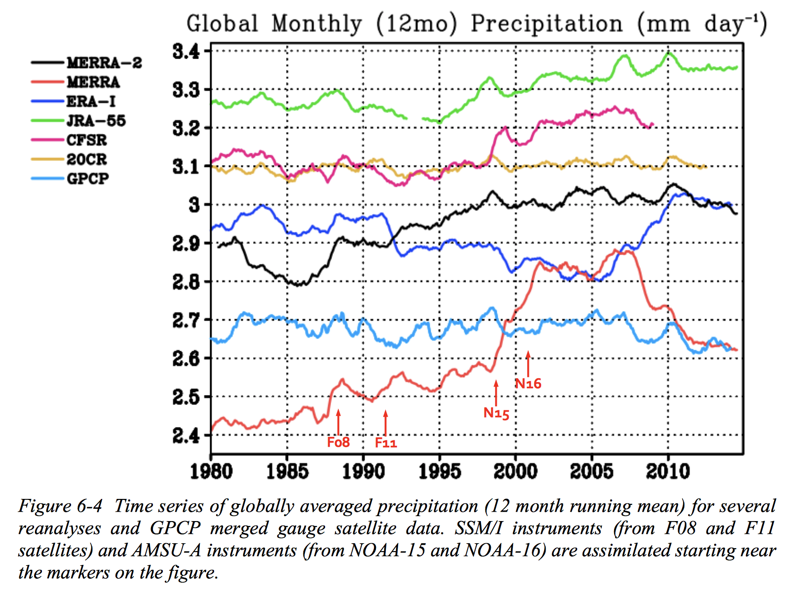

How to Start Working with a Data Product¶
The following are incredibly useful resources to keep in mind while working with weather data:
- üìö UCAR Climate Data Guide
an encyclopedia for weather and climate data products with expert guidance on strengths and weaknesses for most commonly-used datasets
- üìö Reanalysis.org
a forum and wiki for makers and users of reanalyses with a focus on evaluating data products and comparing them with observational data
- üìö Reanalysis and Observational Datasets and Variables
a “who’s who” of historical weather products with basic facts about each
These resources will help you determine which data product is right for you. They will also help you better interpret results from existing studies. (For example, NCEP2, which was commonly used in economics and policy studies, has known issues including larger biases in the Southern Hemisphere).
Additionally, think about if you want climatological (“what you expect”) data, rather than weather (“what you get”) data. Climatology is generally known with more precision and available at higher resolution, but will only represent average patterns (e.g., average temperature by month) rather than any particular year.
Getting Started with a Data Product: BEST and CHIRPS¶
Say you’re looking at agriculture in Ethiopia. You would like both temperature and precipitation data (see the warning on hydrological variables below), and would like to use observational datasets. You consider BEST for temperature due to their daily output and CHIRPS, a hybrid station-satellite data product, for precipitation because you found literature specifically examining its biases in your region of interest.
CHIRPS |
BEST |
|
|---|---|---|
1. Understand the Data Product |
CHIRPS is unfortunately not covered on the UCAR Climate Data Guide. However, you find several articles specifically validating it in Ethiopia (e.g. Dinku et al. 2018 or Gebrechorkos et al. 2018). You see that satellite data products are more biased South of the Rift Valley than North. You also see that CHIRPS tends to overestimate rainfall. You consider how these biases may affect your results. |
BEST is covered in the Climate Data Guide. You see that it is able to provide high-resolution data because it includes incomplete and partial station records than other global products. However, you also see that the data is highly smoothed, meaning that it will likely be more biased in areas with large heterogeneity in temperature - for example in the mountainous highlands of Ethiopia. You resolve to use different sources to check for robustness. |
2. Prepare to Download the Data |
CHIRPS data is stored in a publicly accessible directory (that is a simpler setup than most). You navigate to the |
Click on ‘Get Data (external)’ on the Climate Data Guide website, taking you to Berkley Earth’s data overview page. You navigate down to the section on ‘Gridded Data’. You’ll have to click on every decade separately, but without further ado, clean NetCDF files are being downloaded to your machine. |
3. Accessing the Data |
Unfortunately, the data is not in |
The filename, as is typical for observational datasets, is in tis own format - so you might want to rename them into CMIP format just for ease of reading. By reading the NetCDF header, you note that the grid variables are stored as |
Note
Most weather products will require some bureaucracy (creating accounts, signing data agreements, etc.) to download data, and most have their own quirks about how they want data to be downloaded. CHIRPS and BEST do not require bureaucracy, but CHIRPS will require some scripting to download.
These datasets are stored in different geographical grids and will need to be regridded to a common grid, using tools like xesmf in python. See also weighting schemes.
Getting Started with a Data Product: ERA-5¶
Say you’re studying heat waves in the Sahel. Weather station data is low, so you need a gridded data product. You consider ERA5, the most advanced modern reanalysis data product as of 2019, recently released by the European Centre for Medium-Range Weather Forecasting (ECMWF) (which incidentally also produces the world’s most respected hurricane forecast model).
ERA-5 |
|
|---|---|
1. Understand the Data Product |
|
2. Prepare to Download the Data |
Note GRIB is another meteorological data format - it’s less common and less flexible than NetCDF but slightly more efficient in storage. GRIB files can be converted easily to NetCDF files through command-line tools such as cdo. Caution Many datasets, especially those from smaller institutions, will not give up their secrets so easily. Be prepared to have to deal with |
3. Accessing the Data |
|
See also
See more on ERA5, CHIRPS and UDel at the UCAR Climate Data Guide.
Thinking ahead to climate projections¶
Research linking social outcomes to weather variations often aim to project results into the future to estimate the impact of climate change on their variable of interest. We have chosen (at least for now) not to expand this guide to include information on climate projection because of its immense complexity. Oftentimes a more sophisticated understanding of how models work and their uncertainties is needed to avoid underestimating propagated uncertainties in your final estimates. Even more so than with weather data products, there is no right or correct climate model, or group of models to use (see e.g. Knutti 2010 or Collins 2017). Emissions scenarios, the response of the models to emissions scenarios, intermodel variability, and intra-model variability all add to the uncertainty in your projection, and their relative strength may depend on the timescale and aims of your study.
See also
To get started thinking about incorporating changes in climate into your analysis, we also recommend: On the use and misuse of climate change projections in international development, by Nissan et al. (2019) and Using Weather Data and Climate Model Output in Economic Analyses of Climate Change by Auffhammer et al. (2013)
If you plan to project results into the future, you can start thinking about its logistics now. Climate data comes from imperfect models whose raw output generally has to be “bias-corrected” before being used in econometric or policy research contexts. Bias-correction involves using information from a weather dataset to inform the output of a climate model, either by applying model changes to the weather data (so-called “delta-method” projection) or by adjusting the model output by applying a historical difference between the model and weather data to the future model output. We won’t go into details about these methods (like everything in this field, they have their strengths and weaknesses), but you should generally use data that has been bias-corrected to the same weather data set you are using to inform your econometric model. Oftentimes this bias-correction is still conducted by the econometric or policy-focused research group, but some pre-bias-corrected climate projections exist. For example, NASA’s NEX-GDDP dataset is bias-corrected to the Global Meteorological Forcing Dataset (GMFD) for Land Surface Modeling historical dataset.
A Quick Summarizing Note¶
This process may seem overwhelming, especially given the large variety of data products that exist, and the sometimes rather opaque processes for figuring out what works best.
If a regional observational dataset exists for the region and variables you wish to examine, you should start off with them. Alternatively, you may use a well-understood global observational dataset. Don’t use a dataset or a data assimilation methodology just because previous work (even big-name papers) have used them. There are enough examples in the literature of problematic uses of weather and climate data (for examples of discussions about these issues, see Fisher et al. 2012 and Burke et al. 2015).
Furthermore, check your results with multiple datasets from the latest generation! Consider performing your analysis with a purely station-based dataset and one that includes satellite data; or compare results to those from a reanalysis dataset if you are worried about statistical interpolation in your region of interest. This may not make a huge difference for more stable variables in areas with high station coverage (e.g. temperature in North America), but could be a useful robustness check for more problematic ones (e.g. precipitation). If the choice of ‘historical’ dataset changes your results, think about how their biases may interact with your analysis to figure out what’s causing the discrepancy.
A Warning on Hydrological Variables (Precipitation, Humidity, etc.)¶

As usual, XKCD gets it best
Precipitation is a special beast. It is spatiotemporally highly heterogeneous (it can rain a lot in one place, and not rain at all on the other side of the hill, or an hour or a minute later) and difficult to measure accurately, but is frequently desired for socioeconomic applications.
 Data from Bosilovich et al. (2015); gridded data products disagree on average global monthly precipitation by up to 40%, and aren’t always consistent!
Unlike temperature, which is relatively uniform spatiotemporally and can be interpolated with a relatively high degree of confidence, precipitation data is very difficult to interpolate and requires a much more complex understanding of regional precipitation patterns to assimilate into gridded products. Consequently, gridded precipitation data should be used with “extreme caution”, and its uncertainties should not be underestimated.
Even ‘raw’ precipitation data from weather stations and rain gauges are problematic. Developing a reliable, easily scaled rain gauge network is a difficult task. For example, a common type of rain gauge, the ‘tipping bucket’, only records rain in discrete intervals (when the bucket fills and subsequently ‘tips’), and therefore could record a rainstorm if a drizzle tips an already-full bucket. In rare cases, tipping buckets stationed in remote areas may be stuck in the “tipped” position for some time before anyone notices or can repair them.
In general, rain gauges of most types are biased low. In strong wind conditions, many drops may not enter the rain catch in a gauge due to turbulence; in strong storms, point estimates may miss areas of greatest intensity. Rain data averaged over areas with complex terrain is biased because of the vertical profile of precipitation (stations are generally in valleys). Kenji Matsuura (of the UDel dataset fame) in his expert guidance on his dataset explains: “Under-catch bias can be nontrivial and very difficult to estimate adequately, especially over extensive areas…”
Bias-correcting is integrated into weather data products, often involving assimilation of multiple data sources (satellites, radar, etc.) but significant biases remain (see above Figure).
Precipitation is often recommended as a control in economic models, but its unique character makes it difficult to work with. Beyond the strong uncertainty in precipitation data, precipitation is highly non-gaussian and its correlation with temperature is time- and space- dependent. When using precipitation in your model, be aware of its limitations, check robustness against multiple data products, or on geographic subsets that have better station coverage and potentially less biased data. Make sure to read studies evaluating your chosen data product - for example Dinku et al. 2018 for CHIRPS in Eastern Africa (a useful Google Scholar search for any product could be “[data product name] validation OR evaluation OR bias OR uncertainty”). Finally, make sure you think about what role precipitation plays in your model - see choosing weather variables!
A Final Note on Station Data¶
Station data (e.g. Global Historical Climatology Network (GHCN) and the Global Summary of the Day) can be useful in policy and economic applications, and has been frequently used by especially older studies in the field. It provides a high degree of accuracy in areas of high station density, which generally corresponds to areas with a higher population density and a higher income level. Especially if you are working with urban areas, station data will likely capture the urban heat island effect more accurately than any gridded product.
However, station data can’t be seen as the ‘true’ weather either; assumptions and calibration methodologies affect data here as well (see e.g. Parker 2015), some variables remain rather uncertain, and the influence of microclimates even in close proximity to stations shouldn’t be underestimated (think for example the Greater Los Angeles region, where temperature can vary up to 35 F between the inland valleys and the coast).
Do no interpolate data yourself
Under normal circumstances, do not try to interpolate data yourself. Interpolated and reanalysis data products covered above were specifically designed for this purpose and have vetted methodologies and publicly available citable diagnostics and uncertainties.